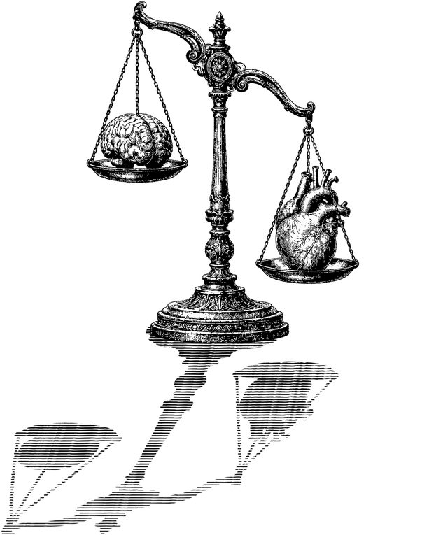

?
너희들은 답변됐다

질문 하나를 마음 깊이 떠올린 다음 눌러 주세요.
© 펜슬프리즘 · 도서출판 연필

질문 하나를 마음 깊이 떠올린 다음 눌러 주세요.
© 펜슬프리즘 · 도서출판 연필
사용법을 누른 당신!
역시 정도를 걷는 사람답다. 그대에게 박수를!
질문 하나를 마음 깊이 떠올린다.
정말 이 천칭에게 답을 듣고 싶은지 다시 생각해 본다.
변호사님이 걸릴지, 단순 무식한 놈이 걸릴지 아무도 모른다. 동문서답하거나 질문에 질문으로 답할 때도 있다.
각오가 섰다면, ‘답변 듣기’를 누른다.
답변을 듣고 활짝 웃는다.
영 엉뚱한 답을 받았다면 소제목을 보고 웃는다.
좋은 답은 ‘문구 복사’를 눌러 간직한다.
※ 답변은 법적 효력이 없으며, 항소는 받지 않는다. 대신 천칭은 일사부재리의 원칙을 따르지 않는다. 같은 질문을 다시 해도 천칭은 처음 듣는 척 성실히 답할 것이다. 불복은 ‘답변 듣기’를 한 번 더 누르는 것으로 갈음한다.
※ 모든 답변은 백산 장편소설 『너희들은 변호됐다』 본문에서 모셔왔다.